Save Editing
NOTE: The encoding of the save game file seems to have changed. It is no longer possible to do a "simple" edit like this one.
It is recommended to SAVE BACKUPS before changing anything if you break your save file.
Save Location
On Windows, your save files are stored in your user's App Data folder: C:\Users\%username%\AppData\LocalLow\Lazy Bear Games\Graveyard Keeper\
On MacOS, your save files are stored in $home/Library/Application Support/unity.Lazy Bear Games.Graveyard Keeper. Some Mac devices (such as M1) store it in `$home/Library/Application Support/Lazy Bear Games/Graveyard Keeper/`
On Linux, your save files are stored in ~/.config/unity3d/Lazy Bear Games/Graveyard Keeper/
Save games do not automatically sync between platforms when using Steam (as of version 1.1.24). However, if you manually copy files between platforms, they seem to work.
Editor
I use EditPad Lite 8.
Go to Options.
Configure File Types and click on Unspecified file type and then Editor Options
and select Wrap long lines at the edge of EditPad's window


Editing saves
The saves are the .dat Files since the files are so big Notepad++ has problems opening the files so i use EditPad.
When you open the File you need to find this section
Which contains your Tech Points, Quest progress, Perks, Quality of Church and Graveyard and other Stuff.

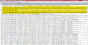

Savefile
Section of a Savefile

if you type (:{"_res_type":)+[^}]+\} into the search bar and select Regex it should be the first one
everything after :{"_res_type": is the name of the number under "_res_v":
For Example "inventory_size" would be the first number after "_res_v": in this case 20.0
In this case lets say i want to change the number of the Green Tech Points . To do this i would need to count everything that is in "",
. To do this i would need to count everything that is in "",
| "inventory_size","sanity","energy","_sloth","_wrath","_envy","_glut","_lust","_pride","speed","witch_hill_is_closed","rednecks_spawned", "in_tutorial","do_not_show_wgo_qualities","not_available_throw_body","gone_out_from_house","dig_graved_skull","lock_tp","tiredness", "skull_digged","go_to_talk_with_donkey_first_time","met_donkey","before_talk_with_donkey","cur_bodies_count","go_to_mortuary_after_skull", "skull_talk_body","in_morgue","skull_talk_autopsi","lock_tp_param", "g" |
until i get to the one i want to change. In This Case "g", for the Green Tech Points. which would be 30 now i would need to count the numbers after "_res_v": until i get to 30tens in this case 2187.0 which i could now change to wathever number i want.
| 20.0,100.0,100.0,250.0,250.0,250.0,250.0,250.0,250.0,3.29284,0.0,0.0,0.0,0.0,0.0,1.0,1.0,0.0,0.0,1.0,0.0,1.0,0.0,0.0,1.0,0.0,1.0,0.0,
0.0, |
noteworthy parameters
Tech Points
| SLayer | Explantion | Notes |
|---|---|---|
| "b", | Blue Tech Points |
999999999 |
| "r", | Red Tech Points |
999999999 |
| "g", | Green Tech Points |
999999999 |
Perks
The Perks start with "p_
For Perks you need to change the Number to 1.0
| Perks | ||||||
|---|---|---|---|---|---|---|
| Icon | Name | Save Name | ||||
| Preacher | "p_preacher", | |||||
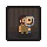 |
Curious Mind | "p_magnifier", | ||||
| Cardinal | "p_cardinal", | |||||
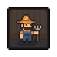 |
Farmer | "p_farmer" | ||||

|
Axeman | "p_axeman", | ||||
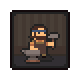 |
Blacksmith | "p_blacksmith", | ||||
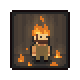 |
Fireman | "p_fireman", | ||||
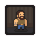 |
Big Guy | "p_big_guy", | ||||

|
Miner | "p_miner", | ||||

|
Carpenter | "p_woodworker", | ||||

|
Mason | "p_mason", | ||||
| Journalist | "p_journalist", | |||||
| Writer | "p_writer", | |||||
| Playwright | "p_good_writer" | |||||
| Beefriend | "p_beekeeper2", | |||||
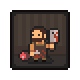 |
Butcher | "p_butcher" | ||||
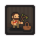 |
Master gatherer | "p_collector" | ||||
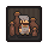 |
Master potter | "p_master_potter" | ||||
| Cultist | "p_cultist" | |||||
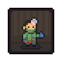 |
Surgeon | "p_doctor" | ||||
| Scientist | "p_scientist" | |||||
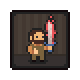 |
Sword master | "p_sword_master" | ||||
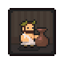 |
Wine master | "p_wine_master" | ||||
| unconfirmed | ||||||
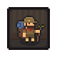 |
Naturalist (goes to curious mind) | "p_naturalist" | ||||

|
Jeweler | "p_jeweler" | ||||
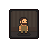 |
? | "p_blabla" | ||||
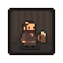 |
Brewer | "p_brewer" | ||||
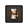 |
Cook | "p_cook" | ||||
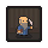 |
Natural writer | "p_natural_writer" | ||||
| Skinner | "p_skinner" | |||||
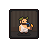 |
Wine master II | "p_wine_master2" | ||||
| plagiarist | "p_writer_thief" | |||||
NPC Relationship
Starts with "_rel_npc_
Number goes from 0.0 t0 100.0
If it was never over 0 it doesnt save it.
| Npc | ||||||
|---|---|---|---|---|---|---|
| Icon | Name | Save Name | ||||
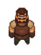 |
Blacksmith | "_rel_npc_blacksmith", | ||||
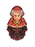 |
Inquisitor | "_rel_npc_inquisitor", | ||||
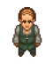 |
Horadric | "_rel_npc_tavern owner", | ||||
| Bishop | "_rel_npc_bishop", | |||||
| Royal Box | "_rel_npc_royal_box", | |||||
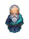 |
Astrologer | "_rel_npc_astrologer", | ||||
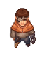 |
Shepherd | "rel_npc_shepherd", | ||||
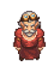 |
Cory | "_rel_npc_carpenter", | ||||
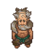 |
Dig | "_rel_npc_dig", | ||||
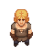 |
Farmer's Son | "_rel_npc_farmers son", | ||||
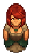 |
Mrs. Chain | "_rel_npc_mrs chain", | ||||
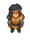 |
Actor | "_rel_npc_actor", | ||||
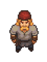 |
Wood Cutter | "_rel_wood_cutter", | ||||
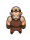 |
Tress | "_rel_npc_engineer", | ||||
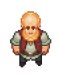 |
Miller | "_rel_npc_miller", | ||||
| Captain | "_rel_npc_captain", | |||||
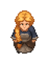 |
Farmers Daughter | "_rel_npc_farmers_daughter", | ||||
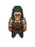 |
Potter | "_rel_npc_potter", | ||||
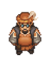 |
Merchant | "_rel_npc_merchant", | ||||
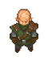 |
Cultist | "_rel_npc_cultist", | ||||
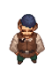 |
Lighthouse Keeper | "_rel_npc_light_keeper", | ||||
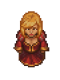 |
Actress | "_rel_npc_actress", | ||||
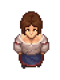 |
Rosa | "_rel_npc_shepherds_wife", | ||||
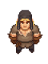 |
Farmer | "_rel_npc_farmer", | ||||
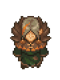 |
Witch | "_rel_npc_witch", | ||||


_rel_npc_tavern owner
_rel_npc_bishop
_rel_npc_astrologer
_rel_npc_royal_box
_rel_npc_shepherd
_rel_npc_carpenter
_rel_npc_dig
_rel_npc_farmers son
_rel_npc_mrs chain
_rel_npc_actor
_rel_wood_cutter
_rel_npc_engineer
_rel_npc_miller
_rel_npc_captain
_rel_npc_farmers_daughter
_rel_npc_potter
_rel_npc_merchant
_rel_npc_inquisitor
_rel_npc_cultist
_rel_npc_light_keeper
_rel_npc_actress
_rel_npc_shepherds_wife
_rel_npc_farmer
_rel_npc_witch
Unlocked Crafts
"unlocked_crafts":[
best used before 0.676 or earlier, getting partially disabled
Omitted a lot of broken ones
- Workyard
- Jewelers Station
"mf_wood_builddesk:p:mf_jewelry_place",- Silver jewelry details
"jewelry_detail_silver", - Gold jewelry details
"jewelry_detail_gold", - Damask sword with gem
"sword_damask_gem",
- Silver jewelry details
- (Workyard) Chest
"mf_wood_builddesk:p:chest_place", - Stonecutter I
"mf_wood_builddesk:p:mf_hammer_0_place",- Piece of marble (from slab)
"marble_plate_1", - Polished piece of marble
"marble_plate_2", - Carved piece of marble
"marble_plate_3",
- Piece of marble (from slab)
- Stonecutter II
"mf_wood_builddesk:p:mf_hammer_1_place",- Piece of marble (from slab)
"marble_plate_1_2", - Polished piece of marble
"marble_plate_2_2", - Carved piece of marble
"marble_plate_3", - Marble Grave Fence
"grave_bot_mrb_1", - Marble Cross
"grave_top_mrb_cross_1", - Marble Grave Fence II
"grave_bot_mrb_2", - Marble Cross II
"grave_top_mrb_cross_2", - Marble Plinth
"grave_top_stella_mrb_1", - Marble Sculpture
"grave_top_sculpt_mrb_1", - Marble Sculpture II
"grave_top_sculpt_mrb_2", - Marble Sacrofag
"grave_top_sarcofag_mrb_1",
- Piece of marble (from slab)
- Workbench for wood II
"mf_wood_builddesk:p:mf_workbench_2_place",- Carved wood
"carved_wood", - Magic wood plank
"wood_magic_1", - Steel sword
"sword_steel", - Steel armor
"armor_lamellar_2", - Steel sword with gem
"sword_steel_gem",
- Carved wood
- Furnace II
"mf_wood_builddesk:p:mf_furnace_1_place",- Silver ingot
"ingot_silver", - Gold ingot
"ingot_gold",
- Silver ingot
- Furnace III
"mf_wood_builddesk:p:mf_furnace_2_place",- Silver ingot
"ingot_silver_2", - Gold ingot
"ingot_gold_2",
- Silver ingot
- Jewelers Station
- Mortuary
- Preparation place II
"morgue_builddesk:p:mf_preparation_2_place", - Embalming table II
"morgue_builddesk:p:mf_balsamation_2_place", - Double pallet
"morgue_builddesk:p:corpse_bed_big_place", - Fridge pallet
"morgue_builddesk:p:corpse_fridge_place",
- Preparation place II
- Church
- Confessional II
"church_builddesk:p:church_budka_2_place", - Stone shrine
"church_builddesk:p:church_table_2_place", - Candelabrum 3
"church_builddesk:p:candelabrum_3", - Incense burner II
"church_builddesk:p:c_obj_incense_2_place", - Soft church bench
"church_builddesk:p:church_bench_2",
- Confessional II
- Alchemy lab
- Church workbench
"alchemy_builddesk:p:table_book_constr_place"- Red candle
"candle_6", - Incense II
"incense_2", - Embalming fluid
"embalm_2_0", - Embalming fluid
"embalm_0_1", - Embalming fluid
"embalm_50", - Embalming fluid
"embalm_-1_1", - Embalming fluid
"embalm_-2_2", - Embalming fluid
"embalm_stop",
- Red candle
- Distillation cube II
"alchemy_builddesk:p:mf_distcube_2_cuprum_place",
- Church workbench
- Slightly broken stuff
- Alchemy Tier I (alternate)
"alchemy_builddesk:p:mf_alchemy_craft_02_place",
Strange single slot variant - Wooden pray stand
"graveyard_builddesk:p:pray_stand_wd_place", - Scarecrow
"garden_builddesk:p:scarecrow",
- Alchemy Tier I (alternate)
Unlocked Phrases
"unlocked_phrases":[
Jumping over alpha blocks
- Once you give the red fish fillet to the bishop:
"@bishop_6d",- Item called
building_permission
couldn't figure out how to unlock the mailbox to give you the option
- Item called
- Once you give the merchant the hiccup grass:
"@merchant_on_cure",- Item called
taste_booster:saltto maketaste_booster:alchemy_1_spiceby Clotho's description.- Optionally at
"black_list_of_phrases":["Ñlotho_need_help",to clear that talk option - Next item in line (that was briefly in 0.677)
dinner:3you need 5 of them
- Optionally at
- Item called
- Once the merchant tells you to wait a week (which doesn't work):
"@merchant_traide_license","@merchant_strategy",- Item called
merchant_traide_license
there is more dialog but functionally is quite lacking as it is here- shortcut that should unlock
"_params":{"_res_type":[(the first from start of file)
add new value"key_to_storage"(recommend end)],"_res_v":[add accompanied value1.0(opens storage\mortuary shortcut)
- shortcut that should unlock
- Item called
Community Fixes
Mostly problems caused by unlocking things in version 0.674
Find these strings and make sure they read like provided
Black space where workyard expansion is supposed to be:
{"gd_tag":"upgrade_player_buildzone_gd","enabled":true},{"gd_tag":"buildzone_player_before_upgrade","enabled":false},
The cursed west graveyard can't be build even when unlocked:
{"gd_tag":"graveyard_buildzone_1_gd","enabled":false},{"gd_tag":"graveyard_buildzone_2_gd","enabled":true},
Missing stone polishing recipes:
"mf_wood_builddesk:p:mf_hammer_1_place","stone_plate_2","stone_plate_3","stone_plate_1_2","stone_plate_2_2","stone_plate_2_3","stone_plate_2_4",
Stonecutter II, polished stone with paste, carved fancy stone, polished stone with chisel, stone from stone block, polished stone with paste on SCII, polished stone with chisel on SCII
Missing printing press upgrade:
"alchemy_builddesk:p:mf_printing_press_2_place","mf_printing_press_1_to_2",
Writing desk II missing (but still bugged) paper glob:
"pail_wet_paper_2",
[pages]